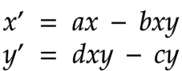

Somatic Interventions

Since the beginning, our vision has been to create a physical installation that fosters collective participation, which in turn focuses on human connectivity. This sculpture is conducted by a flow of different systems that transverses between various physical and virtual planes. These systems are an artificial chemistry algorithm, software communication protocols (OSC), behavioral maps, and human biological data collected via physical sculptural interfaces. As a virtual system, it brings together all different modalities that would also function in the same way with the physical sculpture. Due to our remote collaboration and current circumstance, we realized our project completely in and through a virtual domain.
This image shows a prototype of the sculpture. It is an interactive table with four separate embedded bio-sensing stations (the long tubes), four haptic speakers mounted to the table (that create sound and vibration on the table), and four discrete projection areas coming from above. Participants are invited to place their hands on the bio-sensing stations and have their heartbeats contribute to interactive audio and visual experience.
As a breakdown of actions, the ECG (Electrocardiogram - electrical representation of human heart signal) gets collected from which different information is derived, including heart rate, respiration, and respiration rate, among others. This data is used to interact with an artificial life algorithm that together builds interchanging color states. It also drives and helps create the visual pattern projected on the table surface and manipulate the sounds that come from the haptic speakers.